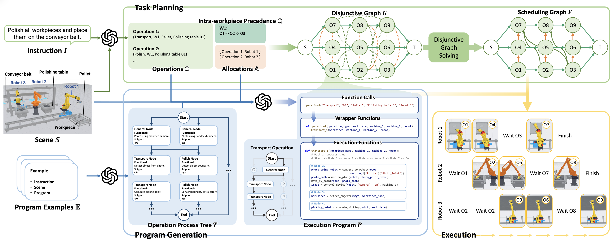
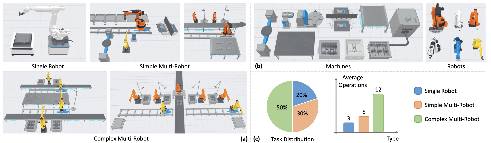

In modern industrial production, multiple robots often collaborate to complete complex manufacturing tasks. Large language models (LLMs), with their strong reasoning capabilities, have shown potential in coordinating robots for simple household and manipulation tasks. However, in industrial scenarios, stricter sequential constraints and more complex dependencies within tasks present new challenges for LLMs. To address this, we propose IMR-LLM, a novel LLM-driven Industrial Multi-Robot task planning and program generation framework. Specifically, we utilize LLMs to assist in constructing disjunctive graphs and employ deterministic solving methods to obtain a feasible and efficient high-level task plan. Based on this, we use a process tree to guide LLMs to generate executable low-level programs. Additionally, we create IMR-Bench, a challenging benchmark that encompasses multi-robot industrial tasks across three levels of complexity. Experimental results indicate that our method significantly surpasses existing methods across all evaluation metrics.
A multi-robot task planning and program generation framework in industrial production lines that integrates LLMs with heuristic algorithms to construct and solve disjunctive graphs, while leveraging a process tree to guide program generation.
A benchmark designed to evaluate the performance of multi-robot systems in industrial tasks, which includes manufacturing tasks of varying complexity and meticulously designed metrics.
The framework is implemented and evaluated in both simulated and real-world settings, performing thorough testing across a wide array of tasks.

An overview of our method. Given an instruction I, an industrial scene S, and program examples E, our method performs task planning to decompose operations, assign robots, and schedule operations using a disjunctive graph and a heuristic solver. This is followed by program generation that translates the plan into executable Python code under the guidance of an operation process tree.
Decompose operations, assign robots, and schedule operations using a disjunctive graph and a heuristic solver.
Translate the plan into executable Python code under the guidance of an operation process tree.
Deploy the high-level plan and low-level programs to enable collaborative execution by multiple robots in industrial settings.
A comprehensive benchmark for evaluating LLM-based industrial multi-robot task planners, spanning three levels of task complexity.

An overview of our dataset. Our tasks consist of (a) various scenes and (b) various machines and robots equipped with different end-effectors. (c) A pie chart showing the distribution of task types on the left and a bar chart showing the average number of operations per task type on the right.
IMR-LLM achieves state-of-the-art performance across all metrics on IMR-Bench.
| Methods | Single Robot Task | Simple Multi-Robot Task | Complex Multi-Robot Task | ||||||||||||
|---|---|---|---|---|---|---|---|---|---|---|---|---|---|---|---|
| OC↑ | SE↑ | Exe↑ | GCR↑ | SR↑ | OC↑ | SE↑ | Exe↑ | GCR↑ | SR↑ | OC↑ | SE↑ | Exe↑ | GCR↑ | SR↑ | |
| SMART-LLM | 0.83 | 0.70 | 0.50 | 0.50 | 0.50 | 0.67 | 0.46 | 0.46 | 0.32 | 0.20 | 0.50 | 0.04 | 0.00 | 0.03 | 0.00 |
| LaMMA-S | 0.80 | 0.80 | 0.70 | 0.70 | 0.70 | 0.71 | 0.67 | 0.40 | 0.45 | 0.33 | 0.56 | 0.26 | 0.20 | 0.33 | 0.16 |
| LaMMA-O | 0.80 | 0.80 | 0.80 | 0.80 | 0.80 | 0.71 | 0.67 | 0.53 | 0.55 | 0.46 | 0.56 | 0.26 | 0.28 | 0.37 | 0.20 |
| LiP-O | 1.00 | 1.00 | 0.90 | 0.90 | 0.90 | 0.93 | 0.80 | 0.73 | 0.74 | 0.73 | 0.63 | 0.28 | 0.36 | 0.42 | 0.24 |
| Ours (GPT-4o) | 1.00 | 1.00 | 0.90 | 0.98 | 0.90 | 1.00 | 1.00 | 0.87 | 0.94 | 0.87 | 0.88 | 0.75 | 0.76 | 0.79 | 0.68 |
| Ours (Qwen3-32B) | 1.00 | 1.00 | 1.00 | 1.00 | 1.00 | 1.00 | 0.93 | 0.87 | 0.90 | 0.87 | 0.85 | 0.71 | 0.76 | 0.79 | 0.60 |
OC: Operation Correctness | SE: Scheduling Efficiency | Exe: Executability | GCR: Goal Completion Rate | SR: Success Rate
@article{su2026imrllm,
title = {IMR-LLM: Industrial Multi-Robot Task Planning and
Program Generation using Large Language Models},
author = {Su, Xiangyu and Xu, Juzhan and van Kaick, Oliver
and Xu, Kai and Hu, Ruizhen},
journal = {arXiv preprint arXiv:2603.02669},
year = {2026}
}